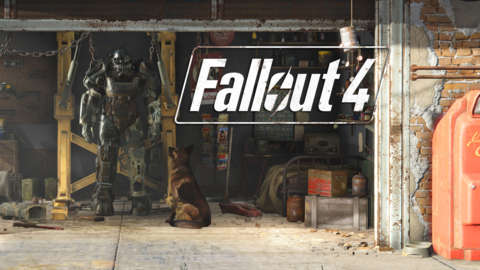
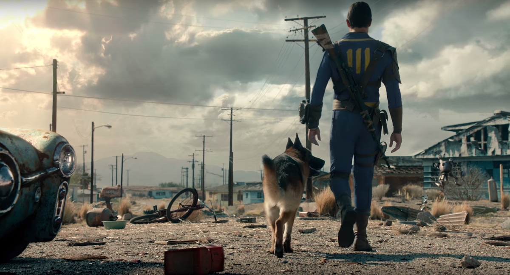
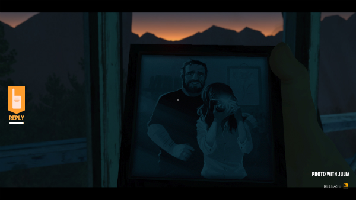
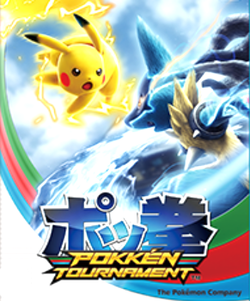
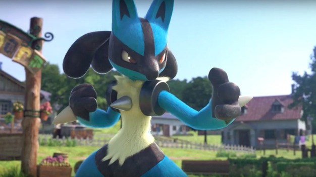

Fallout 4
Fallout 4 is the long anticipated sucessor to Bethesda's popular open world adventure game, Fallout 3. Just as its predessecor Fallout 4 is based in the retro-future post-apcolypse that America became in the wake of global nuclear war. The game is shares similarites to the previous installments in the series in its play style but introduces many new elements. Some of these elements include the new and improved version of Bethesda's Creation Engine used for design allowing for more realistic in-game graphics, an in-game crafting and building system, and more cinematic conversation and interactions with in-world NPCs. This game was accounced at E3 2015 and released shortly after in November of the same year.
Firewatch

Firewatch is a recently released game, debuting on Feburary 9th. The game is and indie piece and is the debut project for both Campo Studios, the creators, and Panic, the publisher. This game follows the main character Henry as he works as a firewatchman at Shosone National Park in Wyoming. As the game progresses strangte events start befalling Henry and he finds a series of clues, leading him to discover a strange mystery in the park.
Pokken Tournement
Pokken Tournement recently joint released by Nintendo and Bandi Namco Entertainment on March 18th of this year. Pokken was originally a Japanese arcarde game, intended to only ever be released in Japan as such. But, the game was soon accouned for a WiiU release. The game is a colaboration between Namco and Nintendo. It is a fighting game intended to combine the characters and moves of the popular Pokemon series with the player V. player arcade fighting game style of the equally popular Tekken series.
